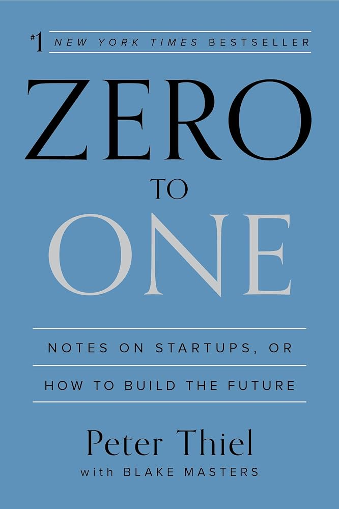

Zero to One
startups- Made me more skeptical of ideas that sound good but are really just polished copies of things people already understand.
- The monopoly framing stuck with me: build something specific enough that being clearly best is actually possible.